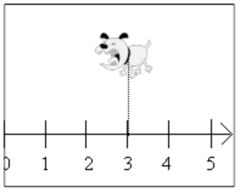
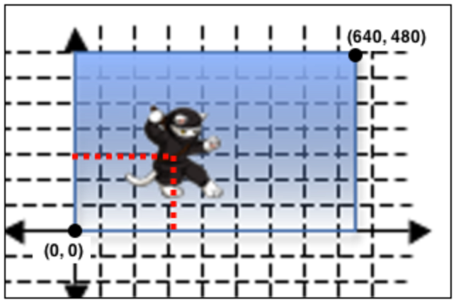
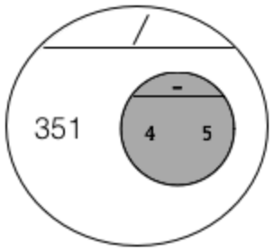
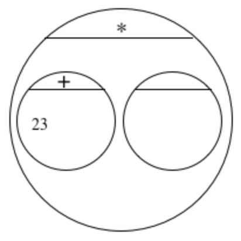
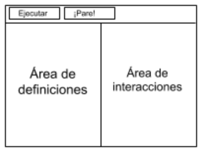
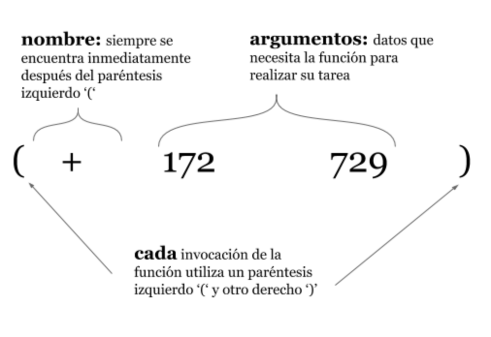

Los estudiantes discuten los componentes de sus videojuegos favoritos y descubren que pueden ser reducidos a una serie de coordenadas. A continuación, exploran las coordenadas en el espacio cartesiano, e identifican las coordenadas de los personajes en un juego en varios puntos en el tiempo. Una vez que se sienten cómodos con las coordenadas, ellos hacen una lluvia de ideas sobre sus propios juegos y crean listas de coordenadas de muestra para diferentes puntos en el tiempo en su propio juego.
Los estándares con el prefijo BS son específicos de Bootstrap; Otros son del Common Core. Pase el mouse sobre cada estándar para ver sus correspondientes declaraciones de evidencia. Nuestra Documento de estándares Muestra qué unidades cubren cada estándar.
5.G.1-2: Graph points on the coordinate plane to solve real-world and mathematical problems
Use a pair of perpendicular number lines, called axes, to define a coordinate system
Represent real world and mathematical problems by graphing points in the first quadrant of the coordinate plane, and interpret coordinate values of points in the context of the situation.
5.OA.1-2: Write and interpret numerical expressions
Use parentheses, brackets, or braces in numerical expressions, and evaluate expressions with these symbols
Write simple expressions that record calculations with numbers, and interpret numerical expressions without evaluating them.
6.NS.5-8: The student performs operations with negative numbers, works with the number line and coordinate plane, order and absolute value of numbers, and solves real-world problems with rational numbers.
graphs of negative numbers on the number line.
A-SSE.1-2: The student interprets the structure of expressions to solve problems in context
interpretation of complicated expressions by viewing one or more of their parts as a single entity
N-Q: The student reasons quantitatively in using units to solve problems
selection of (Identification of) appropriate quantities for the purpose of descriptive modeling
BS-CE: The student translates between structured expressions as arithmetic, code, and Circles of Evaluation
translating a simple (1-operation) equation into a Circle of Evaluation
translating a nested (multi-operation) equation into a Circle of Evaluation
translating a Circle of Evaluation into its equivalent arithmetic expression
translating a Circle of Evaluation into its equivalent programming syntax
BS-IDE: The student is familiar with using a REPL, entering expressions properly, and interpreting error messages
enter and evaluate expressions on the computer
look to error messages as a way of diagnosing syntax errors
BS-M: The student models a problem in context and determines the data needed to describe the problem
identifying which quantities are fixed and which are variable
BS-PL.1: The student is familiar with declaring values and applying built-in functions using the programming language
interpreting a function application and identifying its arguments
Duración: 85 Minutos
Glosario:
aplicando: use una función dada en algunas entradas
argumento: las entradas de una función, las expresiones de los argumentos siguen el nombre de una función
círculo de evaluación: un diagrama de la estructura de una expresión (aritmética o código)
editor: software en el que se puede escribir y evaluar código
equivale a: el resultado de calcular una expresión
evaluar: realizar el cálculo en una expresión, producir una respuesta
expresión: un cálculo escrito en las reglas de algún lenguaje (como aritmética, código o un Círculo de Evaluación)
expresión legal: expresión que sigue las Reglas de Código para un lenguaje de programación
expresión matemática: un cálculo en aritmética
función: un objeto matemático que toma en algunas entradas y produce una salida
lenguaje de programación: un conjunto de reglas para escribir código que una computadora puede evaluar
mensaje de error: información del equipo sobre errores en el código
valores: una pieza específica de datos, como 5 o " hello "
área de definiciones: el cuadro de texto en el Editor (DrRacket o WeScheme), donde se escriben definiciones de valores y funciones
área de interacciones: el cuadro de texto en el Editor (DrRacket o WeScheme), donde entramos expresiones para evaluar
IntroducciónBienvenido a Bootstrap! En este curso, tú estarás aprendiendo un nuevo lenguaje de programación - una manera de decirle a las computadoras exactamente lo que quieres que ellas hagan. Así cómo el español, inglés o francés, un lenguaje de programación tiene su propio vocabulario y gramática que tu tendrás que aprender. Afortunadamente, el lenguaje que tú estarás usando acá ¡tiene mucho en común con la simple matemática que tú ya conoces!
Set expectations and rules for the class.
Connect the material to come with things students already know:
What makes a language? Do some students already speak more than one language?
Programming is very much a language, with its own syntax, semantics, etc
Ask students about their favorite videogames. Be open about the scale of a modern game: they cost millions of dollars, are built by huge teams of programmers and artists, and are developed over years.
Set expectations about what can be accomplished in a single, introductory programming class.
Veamos una Demostración
Repaso
Juegue un juego simple, luego deséchelo y averigüe qué está pasando en la computadora.
Objetivos de aprendizaje
Model a simple videogame
Declaraciones de evidencia
Students will be able to identify the elements of a game and how each one changes during gameplay
Resultados del Producto
En los libros de trabajo, los estudiantes crean un modelo de datos que describe un videojuego simple.
Materiales
Entorno de edición (WeScheme o DrRacket con el bootstrap-teachpack instalado)
Preparación
Computadora para cada estudiante (o pareja), corriendo WeScheme o DrRacket
Si utiliza DrRacket, asegúrese de que el archivo Ninja.rkt está cargado
"NinjaCat" [NinjaCat.rkt de source-files.zip | WeScheme] precargado en las maquinas de los estudiantes
El libro de trabajo del estudiante, carpetas con nombres en las cubiertas y algo con que escribir.
Veamos una Demostración(Tiempo 10 mins)
Veamos una DemostraciónComencemos por explorar un videojuego simple, y luego averiguar cómo funciona. Abre este enlace
para jugar el juego, y pasar un minuto o dos explorándolo. ¡Tú puedes utilizar los cursores para mover el gato a la izquierda, derecha y saltar - para tratar de atrapar el rubí y evitar el perro!
[Video] Show the kids NinjaCat, either letting them play or by demoing it in front of the class. You can move the cat up, down, left and right by using the arrow keys.
Play until the students see all the characters (the clouds, the ruby, the dog and the cat), and be
sure to point out the title and score as well.
Este juego se compone de caracteres, cada uno de los cuales tiene su propio comportamiento. El Rubí se mueve de la derecha a la izquierda, al igual que el perro. NinjaCat sólo se mueve cuando pulsa las teclas de flecha, y puede moverse hacia la izquierda, derecha, arriba y abajo. Podemos averiguar cómo funciona el juego pero primero debemos entender cómo funciona cada personaje.
Pasa a Página 1 en tú libro de trabajo. Acá tenemos una tabla, que usaremos para hacer ingeniería inversa a NinjaCat y ver cómo funciona. Llena la primera columna con una lista completa de todas las cosas en el juego.
This can be a team activity. Solicit a few examples from students, to make sure they understand what’s being listed here: nouns like "the cat", not verbs like "jumping". During this activity, walk around and see how groups are doing.
This is the time to encourage expectations of community and respect - call out good teamwork when you see it! When time is up, give them a countdown: "30...10... 5... 4... 3... 2... 1... PENCILS DOWN, EYES UP HERE!" Wait for total silence and complete attention.
¿Listaste los cuatro personajes en movimiento? ¿Qué más hay en el juego? ¿Es el fondo una parte del juego? ¿El puntaje?
Have students come up to the board, and fill in the table with what they’ve found. If time is short, call on students and have them tell you what to write.
También necesitamos que pienses sobre lo que esta cambiando cuando jugamos el juego. ¿Qué hay acerca del Rubí? ¿Se hace más grande? ¿Cambia de color? ¿Acaso da vueltas? ¡La única cosa que cambia en el Rubí es la posición! Todo lo demás acerca de él es igual. ¿Qué hay acerca del perro? ¿y del gato? Llena el resto en la segunda columna, listando todo lo que cambia sobre cada personaje.
¿Notaste que el perro, el Rubí, la nube y el gato solo cambiaron de posición y nada más? ¿Qué hay del fondo no cambia en nada, por lo que podemos dejar ese cuadro de la tabla en blanco. ¿Notaste que la puntuación cambia de valores? ¡Tú querrás agregar eso a la tabla también!
Quickly fill in the second column on the board. Assign scores.
Planos Cartesianos
Repaso
Students must use the Cartesian plane to describe the location of characters in a picture.
Objetivos de aprendizaje
Understand the use of number lines in defining locations via coordinates
Declaraciones de evidencia
Students apply the number line as a tool for objectively defining location, first identifying how to apply it to
describe the position of a character onscreen in one dimension. This understanding is extended to two dimensions,
ultimately motivating the use of a coordinate grid.
Resultados del Producto
Los estudiantes identifican las coordenadas de los personajes en una imagen
Los libros de trabajo de los estudiantes y algo con que escribir.
Preparación
Los libros de trabajo de los estudiantes y algo con que escribir.
Planos Cartesianos(Tiempo 15 mins)
Planos CartesianosLas computadoras usan números para representar la posición de un personaje en la pantalla, usando líneas numéricas cómo reglas para medir la distancia desde la esquina inferior izquierda de la pantalla. Para nuestro videojuego, colocaremos la línea numérica de modo que la pantalla pase de 0 (a la izquierda) a 640 (a la derecha).
The key point for students here is precision and objectivity. There are many possible correct answers, but students
should understand why any solution should be accurate and unambiguous. This requires students to propose solutions that share a common
"zero" (the starting point of their number line) and direction (literally, the direction from which a character’s position is measured).
Have students discuss this. If time allows, have a student leave the room and let other students come up with ways to write
down where the dog is on the board. Then remove the dog, call in the other student, and have the class direct them using
only what they’ve written down.Try positioning the characters at different places on the line, and have students tell you
what their coordinates are. Try giving them verbal descriptions (e.g. "The center of the screen", "Off the righthand
side of the screen", etc.) and have them translate those into coordinates.
Podemos tomar la imagen del perro, pegarlo en cualquier parte de la línea, y medir la distancia de vuelta al borde izquierdo. Cualquier otra persona que conozca nuestra línea numérica será capaz de duplicar la posición exacta del perro, conociendo sólo el número. ¿Cuál es la coordenada del perro en el lado derecho de la pantalla? ¿El centro? ¿Qué coordenada colocaría al perro más allá del borde izquierdo de la pantalla?
Agregando una segunda línea de números, nosotros podemos localizar a un personaje en cualquier parte de la pantalla en cualquier dimensión. La primera línea es llamada eje x, que va de izquierda a derecha. La segunda línea, que va de arriba a abajo es llamada eje y. Una coordenada bidimensional consiste en posiciones localizadas tanto en el eje x cómo en el eje y.
A coordinate represents a single point, and an image is (by definition) many points. Some students will ask whether a
character’s coordinate refers to the center of the image, or one of the corners. In this particular program, the center
serves as the coordinate - but other programs may use another location. The important point in discussion with students
is that there is flexibility here, as long as the convention is used consistently.
Supongamos que queremos localizar la posición del NinjaCat en la pantalla. Nosotros podemos encontrar la coordenada en x trazando una línea desde el NinjaCat hasta el eje leyendo el número de la posición correspondiente. La coordenada y se encuentra trazando una línea hasta el eje y.
(If time allows, invite volunteers up to the board to try placing NinjaCat and the Ruby at different locations. Have students identify the
coordinates at the corners of the screen. For additional practice, have students bisect each side of the screen and label
the midpoints.)
Cuando escribimos estas coordenadas siempre escribimos la de x antes de la de y (¡cómo en el alfabeto!). La mayor parte del tiempo veas las coordenadas escritas de la siguiente manera: (200, 50) lo que significa que la coordenada en x es 200 y que la coordenada en y es 50.
Dependiendo de cómo se mueva un personaje, su posición podría cambiar sólo a lo largo del eje x, sólo a lo largo del eje y, o ambos. Mira de nuevo la tabla que llenaste en el libro de trabajo (Página 1).
¿Puede NinjaCat moverse arriba y abajo en el juego? ¿Puede moverse a izquierda y derecha? Entonces, ¿qué está cambiando: su coordenada x, su coordenada y, o ambas cosas? ¿Qué pasa con las nubes? ¿Se mueven arriba y abajo? ¿Izquierda y derecha? ¿Ambos?
Llena el resto de la tabla, identificando que está cambiando para cada uno de los personajes.
Ve a la Página 1 en tú libro de trabajo, y mira la página del proyecto que tiene la imagen del juego NinjaCat. ¿Cuáles son las coordenadas en la esquina inferior izquierda de la pantalla? ¿Parte superior derecha? ¿Centrar? Para la práctica, etiquetar las coordenadas en el punto medio de cada lado de la pantalla, a continuación, etiquetar las coordenadas de cada uno de los personajes.
Lluvia de Ideas
Repaso
Students select the theme and characters for their videogame
Objetivos de aprendizaje
Declaraciones de evidencia
Resultados del Producto
Los estudiantes completan la hoja de trabajo de diseño de videojuegos para diseñar su propio juego.
Materiales
Lluvia de Ideas(Tiempo 15 mins)
Lluvia de IdeasEn la Página 1, encontraras una plantilla de planificación para que tú puedas hacer tú propio juego. Al igual que hicimos una lista de todo en el juego NinjaCat, vamos a empezar con una lista de todo en tú juego.
Have students put their names at the top of this page.
Para iniciar, tú juego debe tener cuatro cosas en el:
Un fondo, cómo un bosque, una ciudad, el espacio, etc.
Un jugador, que se pueda mover cuando el usuario presione una tecla
Un objetivo, que vuela desde la derecha hacia la izquierda, y le da al jugador puntos por golpearlo.
Un peligro, que vuela desde la derecha hacia la izquierda, y que el jugador debe evitar.
Have students walk through some sample themes, to make sure they understand the format of the game. For example: A football
game might have a quarterback for the player, a rival player for the danger, and a football as the target. A jungle game
might have a monkey as the player, a snake as the danger, and bananas as the target.
¡Ahora es tiempo de ponernos creativos! Llena la Página 1 en tú libro de trabajo para tú juego, usando tú propio jugador, objetivo y peligro.
Be sure to consult with every team. A lot of students will have trouble fitting their ideas into this
format, or they’ll struggle with coordinates. Be clear about what can and cannot be done! (e.g. - no
3d games, joysticks, multiplayer games, etc. Hint: students who have a well-worded description of their
images will be happier with any images you could find them. Try searching for "Person" versus "Jogger",
for example.
Orden de operaciones
Repaso
Students identify the order of operations for complicated arithmetic expressions through diagramming (circles) and
evaluating (the numerical answer). This lesson introduces students to the Circle of Evaluation, which is a sentence
diagramming tool for arithmetic expressions. This is a powerful way to understand Order of Operations, as it forces
students to focus on the structure of expressions over their computed result.
Objetivos de aprendizaje
Understand the structure of arithmetic expressions
Understand order of operations in an expression
Write expressions as Circles of Evaluation
Translate between Circle of Evaluation and arithmetic expressions
Declaraciones de evidencia
Students will be able to explain why arithemetic expressions require structure
Students will be able to identify the order of operations in an expression that includes
adding, subtracting, multiplying and dividing
Given a Circle of Evaluation, students will be able translate the expression into the
arithmetic expression it represents
Given an arithmetic expression, students will be able to complete a partially-finished Circle
of Evaluation for the same expression
Given a bank of Circles of Evaluation and arithmetic expressions, students will be able to match them
Students will be able to translate the structure of an arithmetic expression into a Circle of
Evaluation
Resultados del Producto
Los estudiantes convierten varias expresiones aritméticas entre múltiples representaciones,
Orden de operaciones(Tiempo 20 mins)
Orden de operacionesLas matemáticas son un lenguaje, cómo el español, inglés o cualquier otro lenguaje. Nosotros usamos nombres cómo "pan", "tomate", "mostaza" y "queso" para describir objetos físicos. Las matemáticas tienen valores, cómo los números ,
o , para describir cantidades.
Students should begin to look at math as a language. To help them with this, you can discuss syntax
and grammar of math, and its potential for ambiguity in the absence of a fixed order of operations. Help
students see that math is a way to communicate calculations among people.
Los humanos tenemos verbos cómo "Tirar", "correr", "construir" y "saltar" para describir acciones de esos nombres. Las matemáticas tienen
funciones cómo la suma y la resta, que son operaciones realizadas con números. Así cómo puedes "Cortar una pieza de pan", una persona puede también "agregar cuatro y cinco".
Una expresión matemática es cómo una oración: es una instrucción para hacer algo. La expresión nos dice que sumemos 4 y 5. Para evaluar una expresión, seguimos las instrucciones en la expresión. La expresión equivale a .
¿A que equivale la expresión ? ¿A que equivale la expresión ? ¿A que equivale la expresión ?
A veces, necesitamos expresiones múltiples para realizar una tarea. Si tuvieras que escribir instrucciones para hacer un sándwich, importaría mucho lo primero: derretir el queso, cortar el pan, extender la mostaza, etc. El orden de las funciones también es importante en matemáticas. Si alguien dice "cuatro más dos menos uno", podrían significar varias cosas:
Suma uno y dos, y después resta uno:
Suma cuatro a la resta de uno menos dos:
Escribe una expresión que pueda significar varias cosas.
Dependiendo de la forma en la que leas la expresión, ¡tú podrías tener diferentes resultados! Este es un problema, porque a menudo usamos matemáticas para compartir cálculos entre personas. Por ejemplo, tú y tu empresa de telefonía
deben acordar de antemano cuánto pagaras por enviar mensajes de texto y hacer llamadas. Diferentes resultados podrían significar que tú factura esta mal.
Evitamos problemas al acordar el orden en el cual usar las diferentes operaciones en una expresión. Hay dos maneras de hacer esto:
Podemos acordar todos un orden para usar.
Podemos agregar detalles a las expresiones para señalar un orden.
Escribe abajo una razón por la que es importante tener reglas sobre el orden de las operaciones.
Los matemáticos no siempre estuvieron de acuerdo en el orden de las operaciones, pero ahora tenemos un conjunto común de reglas para evaluar las expresiones. La pirámide de la derecha resume el orden. Al evaluar una expresión, comenzamos aplicando las operaciones escritas en la parte superior de la pirámide (multiplicación y división). Sólo después de haber completado todas esas operaciones podemos bajar al nivel inferior. Si ambas operaciones están presentes
(cómo en ), leemos la expresión de izquierda a derecha, aplicando las expresiones en el orden en el que aparecen.
This item covers PEMDAS (order of operations in ambiguous expressions). You can skip this item if you
do not need to cover PEMDAS.
¿En qué orden debemos aplicar las funciones en el siguiente ejemplo?
Una forma de indicar el orden de las operaciones en una expresión es primero dibujar la expresión cómo un diagrama. Este diagrama se llama Círculo de Evaluación. Aquí puedes ver un ejemplo de un Círculo de Evaluación, para la expresión matemática .
[Video] This section benefits enormously from visual aids, diagrams, etc. Make sure you have plenty of board space to
draw examples!
Los Círculos de Evaluación muestran la estructura que se está desarrollando dentro de una expresión. Todos los Círculos de Evaluación tienen dos reglas:
Regla del Círculo 1: Cada círculo debe tener una función, que va en la parte superior del círculo.
Regla del Círculo 2: Los números se escriben a continuación, en orden de izquierda a derecha.
¿Que regla rompe este círculo de evaluación?
Intenta dibujar un círculo de evaluación para cada una de las siguientes expresiones:
Cada círculo de evaluación equivale a el resultado de su expresión. Por ejemplo el círculo en la derecha equivale a , el círculo dice que se use la resta (la función que esta arriba) en los números en orden ().
It’s important for students to view the Circles of Evaluation as "just another way of writing arithemetic".
Have students discuss whether associativity and commutativity still matter here (they do).
Para utilizar múltiples funciones en la misma expresión, podemos combinar Círculos de Evaluación. Mira el Círculo de Evaluación que has escrito para . Ya sabemos que el Círculo parar equivale a , por lo que podemos reemplazar el
numero con la expresión. ¿Cambia esto a lo que equivale la expresión?
From this point forward, the Circles of Evaluation are your assessment tool for Order of Operations.
Quizzing students by asking them to correctly evaluate an expression is fraught with false negatives,
as many student might get the order right but may still have problems with basic calculations. This
method is also vulnerable to Commutativity, since a student will correctly evaluate
even if they get the order of operations wrong! Circles of Evaluation have neither of these flaws,
as they put the emphasis where it should be: exercising a student’s ability to see the structure
inside the arithemetic.
Termina de escribir el Círculo de Evaluación que se muestra aquí, de modo que represente
¿A que es lo que equivale este Círculo de Evaluación? Repasemos cómo evaluamos un Círculo::
Sabemos que estamos multiplicando porque esa es la función en la parte superior del Círculo.
El número es el primer número en la multiplicación, porque está en el lado izquierdo.
El segundo número de la multiplicación está en el lado derecho. El lado derecho tiene un círculo separado, por lo que necesitamos evaluar el número para ese círculo. El segundo número es, por lo tanto, el resultado de sumar 4 y 5.
(el círculo interno) equivale a , y (el círculo externo) equivale a . Este círculo equivale a .
Convierte este círculo de evaluación en una expresión aritmética.
Work through several of these examples with students, asking them to come up with arithmetic
expressions and then convert them into Circles, or giving them Circles and having them
translate them back into arithmetic. When you talk about Circles, be sure to consistently use
the term function for what’s on top, rather than similar terms like "operation", "symbol",
"procedure", "name", etc. The Circles of Evaluation will help students see the similarity between
arithmetic functions (like ) and algebraic functions (like ) if you use
terminology carefully.
Haz coincidir los siguientes Círculos de Evaluación con las correspondientes expresiones aritméticas:
(/ (+ 24)(- 63))
(- (* 94)3)
(* -52)
(* 9(- 43))
(* (- 93)4)
Introducción a Programación
Repaso
Students are introduced to the programming environment
Objetivos de aprendizaje
Convert Circles of Evaluation into code
Enter and evaluate code expressions for arithmetic on the computer
Understand the goal of error messages from the computer
Declaraciones de evidencia
Students will be able to identify the Interactions and Definitions areas
Students will be able to enter and evaluate simple arithmetic expressions in the Interactions area
Students will be able to convert Circles of Evaluation into correctly-formed programs
Students will be able to explain an ’unbounded identifier’ error message
Students will be able to explain the purpose of error messages
Given a Circle of Evaluation, students will be able to complete a partially-written program
Given a bank of Circles of Evaluation and programs, students will be able to match them
Resultados del Producto
Preparación
Proyector
Introducción a Programación(Tiempo 15 mins)
Introducción a ProgramaciónAbre la herramienta de programación de tu elección: Si haz instalado, DrRacket, haz doble clic en la aplicación para iniciarla. Si estas utilizando la herramienta en línea, haz clic aquí para iniciar sesión
ingresa tú nombre de usuario y contraseña para iniciar sesión, luego haz clic en "Iniciar un nuevo programa".
Have the students look at the editor on their computers. Refer to overhead
projector as necessary.
Esta pantalla es llamada el editor, y se parece al diagrama que ves acá. Hay algunos botones en la parte superior, pero la mayor parte de la pantalla está ocupada por dos grandes cuadros: el área de definiciones en la izquierda y el área de Interacciones en la derecha.
The Definitions area is where programmers define values and functions in their program,
while the Interactions area allows them to experiment with those values and functions.
This is analogous to writing a series of function definitions on a blackboard, and having
student evaluate expressions using those function on scrap paper. As students are not yet
defining values of their own, it is not important that students understand this distinction
right now. For now, we will work only with the Interactions area.
Un programa expresión legal que cuando se evalúa, produce un valor. ¡Has estado escribiendo programas utilizando expresiones matemáticas desde que aprendiste a sumar! Al igual que en inglés, hay reglas que determinan si una oración tiene sentido. ¡Los programas también tienen reglas! Un programa puede ser muy complicado, pero no tiene que ser así: los programas más simples de todos son sólo Números.
Draw students’ attention to the Language Table (see Lesson Overview for Unit 1),
which currently sits empty. Add "Numbers" to the Types section of the language
table.
Regla de código 1: Todos los valores son expresiones legales.
Escribe 4 en el área de interacciones y presiona "enter". Tú veras el valor 4 aparecer en la siguiente línea en el área de interacciones.
Escribe 10 en el área de interacciones y presiona "enter" Ahora el valor 10 aparecerá en el área de interacciones.
Intenta evaluar números cómo 10345017, o números negativos, cómo -2.¿Hay un límite para cuán grande puede ser un número? ¿Qué sucede si escribes un decimal? ¿Qué sucede cuando tú das clic en un decimal, cómo 0.75? Tú obtendrás un nuevo tipo de numero, una fracción, cómo 3/4.
The editing environment evaluates all fractions and returns them as decimals by default. This can be
surprising to students at first, so you may want to take a moment to explain what’s going on, and
show them that these decimals can be converted back to fractions just by clicking on them. The
environment uses standard annotations for repeating, non-terminating decimal expressions and
properly handles expressions like . If you want to work with those kinds of
numbers in your class, enter them to get familiar with how they appear in the Interactions area.
La computadora obviamente sabe de números, pero ¿Qué pasa si tú le escribes algo de lo que no conoce?
¿Se quejará? ¿Adivinara?
Intenta preguntar a la computadora
que evalúe la palabra perro en el área de interacciones.
Estos mensajes de error son muy útiles para los programadores. En lugar de decir "este programa no funciona", el equipo hace lo mejor que puede para decirle lo que salió mal, y para darle tanta información cómo sea posible para ayudarle a solucionar el problema. ¡Asegurate siempre de leer estos mensajes cuidadosamente!
The error message uses the term "variable". Don’t worry if your students don’t already know this
term; we will teach it to them shortly. For now, students just need to get used to error messages
and the kinds of problems that they catch in programs.
Los Círculos de Evaluación también son fáciles de convertir en programas informáticos. Para traducir un Círculo de Evaluación en un programa, comienza con un paréntesis abierto (, luego la función escrita en la parte superior del círculo, luego traduce las entradas de izquierda a derecha de la misma manera, agregando un paréntesis de cierre) cuando termines. Este proceso nos da la segunda regla para las expresiones:
Regla de Código 2: Cada paréntesis abierto es seguido por una función, luego por una o más expresiones legales, y finalmente por un paréntesis de cierre.
Acá esta el código para el Círculo de Evaluación: (- 4 5)
Mira que pasa
cuando este código entra al área de interacciones.
Presiona la tecla enter para evaluar el programa. Tú deberías ver cómo respuesta.
Have students practice converting simple Circles of Evaluation into code. If you want to help students
understand when to use the parentheses, here are two explanations that we find useful. First, the
parens look like the Circle, and the Circle encloses the function name and its inputs. Second, we
use a more visual description of an ant eating its way through the expression. The ant eats into the
Circle (an open paren), then goes to the function at the top, then to the arguments from left to right,
then finally out of the Circle (a close paren). If the ant encounters another Circle while writing
down the arguments, it needs another open paren, etc.
Cuando un Círculo de Evaluación tiene otros círculos dentro de él, la traducción sigue las mismas reglas: cada Círculo requiere un nuevo conjunto de paréntesis:
(* 6 (+ 4 5))
Intente ingresar este código en el área Interacciones. ¿Qué debe evaluar el programa cuando presiones enter?
Practica convirtiendo los otros círculos de evaluación que has dibujado en código.
[Video on Roles in Pair Programming.]
Scaffolding for Pair Programming: Talk to students about the roles of Driver
and Navigator. The Driver is the student with their hands on the keyboard - they’re
in charge of typing, using the mouse, etc. The Navigator should be telling the Driver what to
type, and pointing out mistakes or suggesting things. It’s important to clarify what these
roles are (perhaps reinforcing them with a visual), to ensure that both partners are active
and talking to one another about the task at hand. The linked video does a great job discussing these roles.
Todas las expresiones que siguen al nombre de la función se llaman argumentos a la función. El siguiente diagrama resume la forma de una expresión que utiliza una función.

Para practicar, pasa a la Página 1
en tú libro de trabajo. Para cada expresión matemática, dibuja el Círculo de Evaluación, y luego convierte ese Círculo en código de Racket.
Cuando las expresiones no siguen las reglas de código, el equipo te dirá que encontró un problema. La computadora también te da información para ayudarte a solucionar el problema. Esta información se denomina
mensaje de error. Hablaremos más sobre los mensajes de error más tarde. Por ahora, solo queremos que veas un par de mensajes de error para que sepas lo que son si te encuentras con uno durante la programación.
Ingresa cada una de las siguientes expresiones ilegales en el área Interacciones y observa el mensaje de error o comportamiento que le da el equipo.
(5 * 6) [Pone la función en el medio, en lugar de en la parte delantera.]
(*5 6) [Falta un espacio después de la función]
* 5 6) [Olvida el paréntesis de apertura]
(* 5 6 [Olvida el paréntesis de cierre]
At this point, the goal is simply to have students see error messages. Students are not
expected to be experts at reading error messages this early
(you will drill this later). NOTE: When a close parenthesis is missing, hitting return will do nothing,
because the computer is waiting for the parenthesis. When an open parenthesis is missing, WeScheme
does nothing and waits for the programmer
to add the parens. If students hit enter and "nothing happens", they should check their parentheses.
Also note that if you do this sequence of exercises with + instead of *, the error
appears differently, because +5 is a perfectly valid number (just like -5).
Concluyendo.
Repaso
Objetivos de aprendizaje
Declaraciones de evidencia
Resultados del Producto
Materiales
Preparación
Concluyendo.(Tiempo 5 mins)
Concluyendo.¡Has hecho mucho en esta primera unidad!
Tú desglosaste un juego para ver cómo funciona.
Diseñaste Tú propio juego, que harás durante este curso
Tú practicaste usando coordenadas para poner caracteres en una pantalla
Tú aprendiste sobre el orden de las operaciones, los círculos de evaluación, cómo convertir los círculos de evaluación en programas y cómo ejecutarlos para obtener respuestas.
En la siguiente unidad, empezaremos a escribir programas para cosas más interesantes que simplemente la aritmética.
Make sure student names are on the Game Design page. Take this page, or take photos of it, to prep game images for a later Unit.

 También necesitamos que pienses sobre lo que esta
También necesitamos que pienses sobre lo que esta  Llena el resto de la tabla, identificando que está cambiando para cada uno de los personajes.
Llena el resto de la tabla, identificando que está cambiando para cada uno de los personajes. Una forma de indicar el orden de las operaciones en una expresión es primero dibujar la expresión cómo un diagrama. Este diagrama se llama
Una forma de indicar el orden de las operaciones en una expresión es primero dibujar la expresión cómo un diagrama. Este diagrama se llama  Cada círculo de evaluación
Cada círculo de evaluación  Acá esta el código para el Círculo de Evaluación: (- 4 5)
Acá esta el código para el Círculo de Evaluación: (- 4 5)
 Cuando un Círculo de Evaluación tiene otros círculos dentro de él, la traducción sigue las mismas reglas: cada Círculo requiere un nuevo conjunto de paréntesis:
(* 6 (+ 4 5))
Cuando un Círculo de Evaluación tiene otros círculos dentro de él, la traducción sigue las mismas reglas: cada Círculo requiere un nuevo conjunto de paréntesis:
(* 6 (+ 4 5))